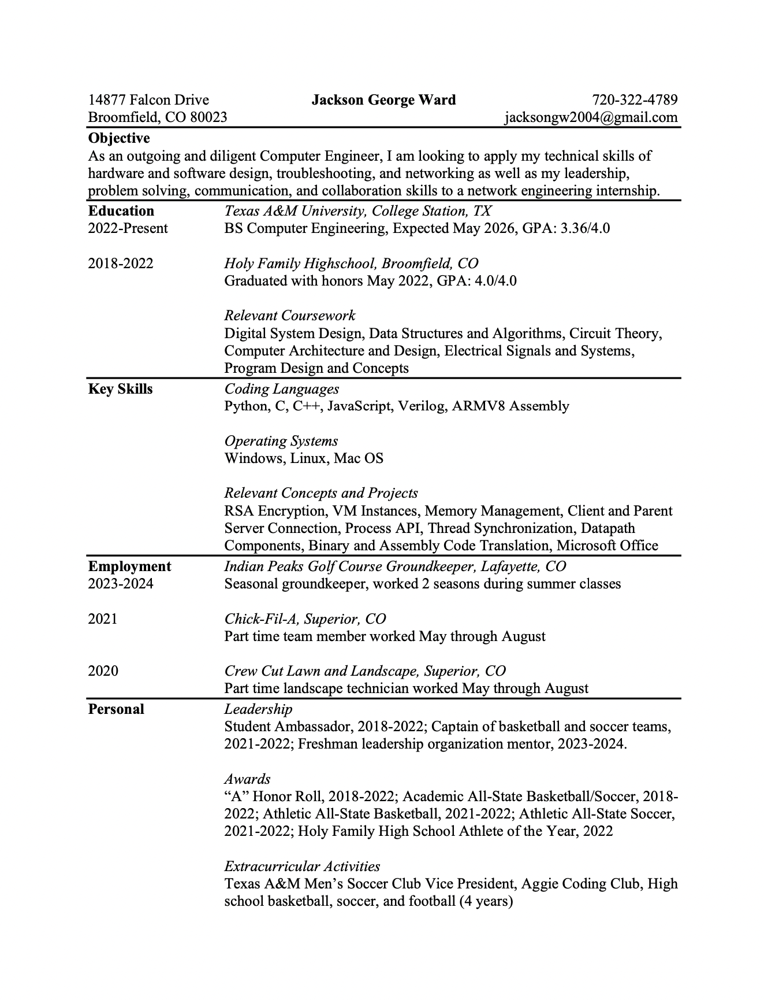

I have several interests revolving around the world of computer science. My first main interest is robotics. During my freshman year of high school, I actually attended the Youth Adventure Program (YAP) camp specifically for robotics. Our objective was to automate the driving of a robot along a track lined with copper wires. The fastest team to complete the track would win the competition. We worked in teams to program our robot to detect copper wire, assemble the robot for prime mobility, and assemble circuitry in an organized manner. My team won this competition, having our robot complete the track the fastest. Since this competition, the programing of robots has fascinated me and been a prime interest of mine. My next interest is in networking. My dad has worked in communications as an electrical engineer. I have gone to his office and to the computer labs at his work ever since I was a kid. I have always been interested in how all of the computers function and how they make these connections over large distances. Since at Texas A&M, I have learned more about connections between servers. Outside of Texas A&M, I have learned fiber, more specifically about the fiber optic cables that are used to transmit data quickly. After taking classes about translating code from binary to assembly to high level machine language, I have become more interested in working in this field. My last main interest in the world of computer science is game design. Video games have always been a hobby of mine, but more recently I have been interested in the programing and development that goes into making these games. In particular, I have looked into development of Nintendo games. Working on these games in the early stages and being a part of the debugging and troubleshooting process of development would be an amazing job.
